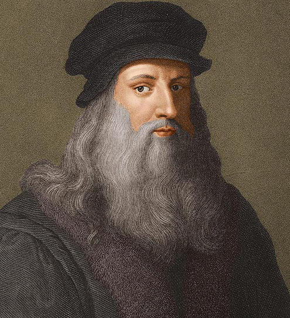
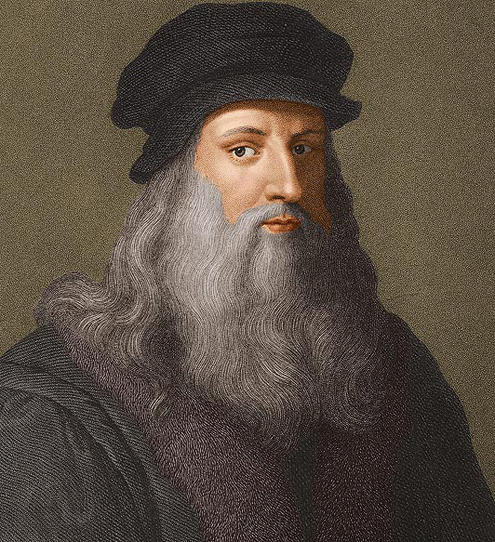

Leonardo da Vinci
Leonardo da Vinci(Vinci, 15 de abril de 14522-Amboise, 2 de mayo de 1519) fue un polímata florentino del Renacimiento italiano. Fue a la vez pintor, anatomista, arquitecto, paleontólogo, artista, botánico, científico, escritor, escultor, filósofo, ingeniero, inventor, músico, poeta y urbanista. Murió acompañado de Francesco Melzi, a quien legó sus proyectos, diseños y pinturas. Tras pasar su infancia en su ciudad natal, Leonardo estudió con el pintor florentino Andrea de Verrocchio. Sus primeros trabajos de importancia fueron creados en Milán al servicio del duque Ludovico Sforza. Trabajó a continuación en Roma, Bolonia y Venecia, y pasó sus últimos años en Francia, por invitación del rey Francisco I.
Frecuentemente descrito como un arquetipo y símbolo del hombre del Renacimiento, genio universal, además de filósofo humanista cuya curiosidad infinita solo puede ser equiparable a su capacidad inventiva, Leonardo da Vinci es considerado uno de los más grandes pintores de todos los tiempos y, probablemente, la persona con el mayor número de talentos en múltiples disciplinas que jamás ha existido. Como ingeniero e inventor, Leonardo desarrolló ideas muy adelantadas a su tiempo, tales como el helicóptero, el carro de combate, el submarino y el automóvil. Muy pocos de sus proyectos llegaron a construirse (entre ellos la máquina para medir el límite elástico de un cable), puesto que la mayoría no eran realizables durante esa época. Como científico, Leonardo da Vinci hizo progresar mucho el conocimiento en las áreas de anatomía, la ingeniería civil, la óptica y la hidrodinámica.
 
